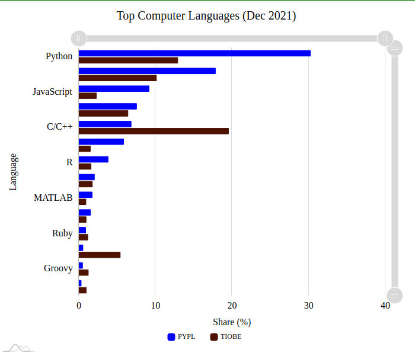
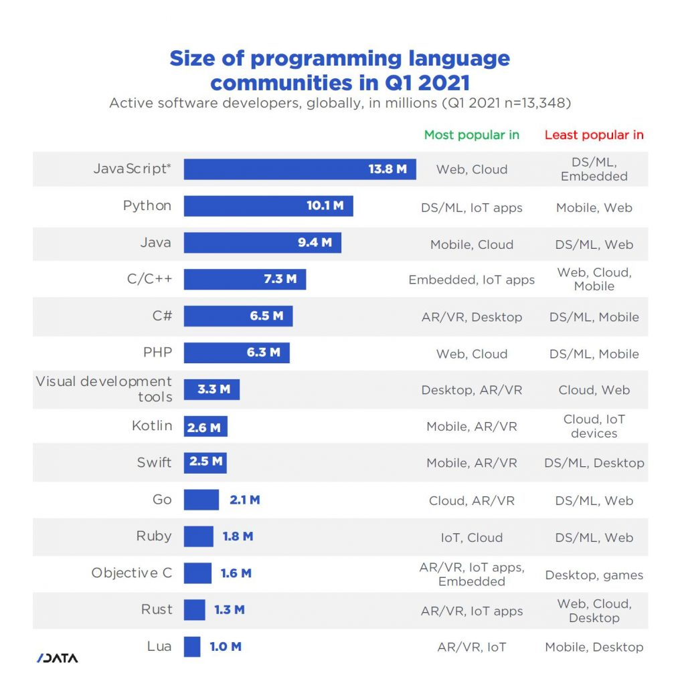

What is Programming?
In this blog post, we will decipher the term “programming” and understand its usage and many other related terms.
Understanding Programming in Layman terms
Programming is a way to “instruct the computer to perform various tasks”.
Confusing? Let us understand the definition deeply.
“Instruct the computer”: this basically means that you provide the computer a set of instructions that are written in a language that the computer can understand. The instructions could be of various types. For example:
- Adding 2 numbers,
- Rounding off a number, etc.
Just like we humans can understand a few languages (English, Spanish, Mandarin, French, etc.), so is the case with computers. Computers understand instructions that are written in a specific syntactical form called a programming language.
“Perform various tasks”: the tasks could be simple ones like we discussed above (adding 2 numbers, rounding off a number) or complex ones which may involve a sequence of multiple instructions. For example:
- Calculating simple interest, given principal, rate and time.
- Calculating the average return on a stock over the last 5 years.
The above 2 tasks require complex calculations. They cannot usually be expressed in simple instructions like adding 2 numbers, etc.
Hence, in summary, Programming is a way to tell computers to do a specific task.
Why should you bother about coding?
You must be wondering - why does one need a computer for adding or rounding off numbers? Or even for simple interest calculation? After all, even an 8th standard kid can easily do such things even over large numbers. What is programming used for? What benefits do computers offer?
Well, computers offer so many benefits:
- Computers are fast: computers are amazingly fast. If you know how to properly utilize the power of Computer programming, you can do wonders with it. For a typical computer of today’s time, an addition of 2 numbers which could be as big as a billion each takes hardly a nanosecond. Read again - nanosecond! That means that in 1 second, a computer can perform about a billion additions. Can any human ever do that? Forget a billion additions a second, typical human can’t even do 10 additions per second. So, computers offer great speed.
- Computers are cheap: if you were a stock market analyst and you had to monitor the data of say 1000 stocks so that you can quickly trade them. Imagine the hassle that would create if you were to do it manually! It is just impractical. While you are performing your calculation on the stock’s performance, the price may change. The other alternative is to hire people so that you can monitor more stocks in parallel. That means your cost goes up significantly. Not to mention the trouble you will face if some of your employees commit a calculation error in the process. You may end up losing money! Contrast that with the case where you use a computer. Computers can process a huge amount of information quickly and reliably. 1000 stocks are nothing for computers in the 21st century.
- Computers can work 24x7: Computers can work 24x7 without getting exhausted. So, if you have a task that is big enough, you can without worries allocate it to a computer by programming it and sleep peacefully.
Why should you learn Computer Programming?
Now, after knowing so many things about programming, the big question to be answered is - why should you learn Computer Programming? Let us understand why:
- Programming is fun: Using Programming, you can create your own games, your personal blog/profile page, a social networking site like Facebook, a search engine like Google or an e-commerce platform like Amazon! Won’t that be fun? Imagine creating your own game and putting it on Play Store and getting thousands and thousands of downloads!
- The backbone of a Technology Company: The backbones of today’s technology companies like Google, Facebook, Microsoft, Apple, Amazon, and many others, are giant computer programs written by a collaboration of thousands of skilled programmers. If you have the right business acumen, knowing programming can help you create the next big tech company.
- Pretty good salary: Computer Programmers are paid extremely well almost all across the world. Top programmers in Silicon Valley make millions of dollars every year. Quite a few companies offer to start salaries as high as $100,000 per year.
Compiled and Interpreted Language
There are two types of programming languages - Compiled Languages and Interpreted Languages.
A compiled language is a programming language which are generally compiled and not interpreted. It is one where the program, once compiled, is expressed in the instructions of the target machine; this machine code is undecipherable by humans.
Examples of pure compiled languages are C, C++, Erlang, Haskell, Rust, and Go.
An interpreted language is a programming language which are generally interpreted, without compiling a program into machine instructions. It is one where the instructions are not directly executed by the target machine, but instead read and executed by some other program.
Interpreted language ranges – JavaScript, Perl, Python, BASIC, etc.
Advantages of compiled languages
Programs that are compiled into native machine code tend to be faster than interpreted code. This is because the process of translating code at run time adds to the overhead, and can cause the program to be slower overall.
Disadvantages of compiled languages
The most notable disadvantages are:
- Additional time needed to complete the entire compilation step before testing
- Platform dependence of the generated binary code
Advantages of interpreted languages
Interpreted languages tend to be more flexible, and often offer features like dynamic typing and smaller program size. Also, because interpreters execute the source program code themselves, the code itself is platform independent.
Disadvantages of interpreted languages
The most notable disadvantage is typical execution speed compared to compiled languages.
Actually, most programming languages can have both compiled and interpreted implementations – the language itself is not necessarily compiled or interpreted. However, for simplicity’s sake, they’re typically referred to as such. Python, for example, can be executed as either a compiled program or as an interpreted language in interactive mode. On the other hand, most command line tools, CLIs, and shells can theoretically be classified as interpreted languages.
Top Programming Languages
This is a list of the popular programming languages at December 2021.
TIOBE Index: TIOBE ratings are calculated by counting hits of the most popular search engines. Twenty-five search engines are used to calculate the TIOBE index. The TIOBE Programming Community index is an indicator of the popularity of programming languages. The index started in the year 2001 and updated once a month.
PYPL Index: The PYPL PopularitY of Programming Language Index is created by analyzing how often language tutorials are searched on Google. The index is updated once a month.
 If you're excited by the data and logic side of coding, you may wish to learn Python, Java, C, C++ or C#. If you're jazzed about visual design and user interfaces, TypeScript might be up your alley. And if you're looking to develop mobile apps, you'd want to check out Java for Android, and Swift or Objective-C for Apple's iOS.
Best Programming IDE
1. Microsoft Visual Studio
Microsoft Visual Studio is a premium IDE ranging in price from $699 - $2,900 depending on the edition and licensing. The many editions of this IDE are capable of creating all types of programs ranging from web applications to mobile apps to video games. This series of software includes tons of tools for compatibility testing so that you can see how your apps run on more than 300 devices and browsers. Thanks to its flexibility, Visual Studio is a great tool for both students and professionals.
Languages supported: ASP.NET, DHTML, JavaScript, JScript, Visual Basic, Visual C#, Visual C++, Visual F#, XAML and more.
Notable features:
2. NetBeans
Netbeans is a free and open source IDE. Ideal for editing existing projects or starting from scratch, NetBeans boasts a simple drag-and-drop interface that comes with a myriad of convenient project templates. It is primarily used to develop Java applications, but you can download bundles that support other languages.
Languages supported: C, C++, C++11, Fortan, HTML 5, Java, PHP and more,
Notable features:
3. PyCharm
PyCharm is developed by the folks over at JetBrains and provides users a free Community Edition, 30 day free trial for the Professional Edition, $213 - $690 for an annual subscription. Comprehensive code assistance and analysis make PyCharm the best IDE for Python programmers of all ability levels. PyCharm also supports other languages and works on multiple platforms, so practically anyone can use it.
Languages supported: AngularJS, Coffee Script, CSS, Cython, HTML, JavaScript, Node.js, Python, TypeScript and template languages.
Notable features:
4. IntelliJ IDEA
IntelliJ IDEA is another IDE developed by Jet Brains. This IDE offers users a free Community Edition, 30 day free trial for the Ultimate Edition, and costs $533 - $693 annually depending on features. IntelliJ IDEA, which supports Java 8 and Java EE 7, comes with extensive tools to develop mobile apps and enterprise technologies for different platforms. When it comes to cost, IntelliJ is a real deal due to the massive of list of features you get.
Languages supported: AngularJS, CoffeeScript, CS, HTML, JavaScript, Less, Node JS, PHP, Python, Ruby, Sass, TypeScript and more.
Notable features:
5. Eclipse
Eclipse is a free and flexible open source editor useful for beginners and pros alike. Originally a Java environment, Eclipse now has a wide range of capabilities thanks to a large number of plugins and extensions. In addition to debugging tools and Git/CVS support, the standard edition of Eclipse comes with Java and Plugin Development Tooling. If that's not enough for you, there is plenty of other packages to choose from that include tools for charting, modeling, reporting, testing and building GUIs. The Eclipse Marketplace Client gives users access to a treasure trove of plugins and information supplied by an expanding community of developers.
Languages supported: C, C++, Java, Perl, PHP, Python, Ruby and more
Notable features:
6. Code::Blocks
Code::Blocks is another popular free and open source option. It is a highly customizable IDE that performs consistently across all platforms, so it is great for developers who frequently switch between workspaces. The plug-in framework lets users tweak this IDE to meet their needs.
Languages supported: C, C++, Fortran.
Notable features:
7. Aptana Studio 3
Perhaps the most powerful of the open source IDEs, Aptana Studio 3 is a massive improvement over its predecessors. Since Aptana Studio 3 supports most browser specs, compatibility challenges are minimal, so users can quickly develop, test and deploy web apps from this single IDE.
Languages supported: HTML5, CSS3, JavaScript, Ruby, Rails, PHP, and Python.
Notable features:
8. Komodo
Komodo offers a free 21-day trial and costs between $99 - $1615 depending on the edition and licensing. Practically any programmer can use Komodo because it supports most major programming languages. The streamlined interface allows for advanced editing, and small perks like the Syntax Checker and single-step debugging make Komodo one of the most popular IDEs for web and mobile development.
Languages supported: CSS, Go, JavaScript, HTML, NodeJS, PerlPHP, Python, Ruby, Tcl and more.
Notable features:
9. RubyMine
RubyMine is another premium IDE, developed by Jet Brains, that offers a 30 day free trial and costs $210 - 687 annually. As its name implies, RubyMine is a favorite among Ruby enthusiasts; however, this IDE supports other programming languages as well. Easy navigation, logical workflow organization, and compatibility with most platforms make RubyMine a workplace favorite.
Languages supported: CoffeeScript, CSS, HAML, HTML, JavaScript, Less, Ruby and Rails, Ruby and SASS.
Notable features:
10. Xcode
Xcode IDE is free, open source, and part of Xcode, which is a collection of tools for making apps for Apple devices such as the iPad, iPhone and Mac. Integration with Cocoa Touch makes development in the Apple environment a breeze, and you can enable services such as Game Center or Passbook with a single mouse click. Built-in communication with the developer's website helps users produce fully functioning apps on the fly.
Languages supported: AppleScript, C, C++, Java, Objective-C.
Notable features:
Finding the best IDE for your needs
As you can see, the best IDE for you depends on your operating system, your programming language of choice and which platforms you wish to develop for. Finding the right fit is really an ongoing process. Your options are practically limitless, so it may be helpful to make a list of your preferences and then searching for the IDE that most closely matches your needs. While every developer has their favorite software, don't be afraid to branch out as the world of IDEs is always expanding.